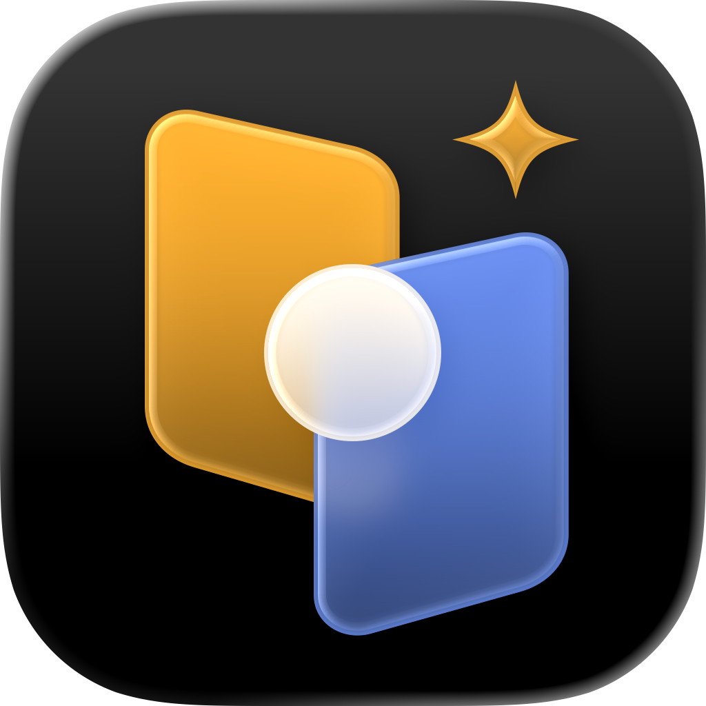

为什么需要相册权限？
回瞬的核心功能需要读取相册来展示回忆。所有照片处理都在本机完成，不会上传。
Support
欢迎来到回瞬的技术支持页面，我们很乐意帮助你。

Contact
如果你在使用回瞬时遇到问题，欢迎发送邮件到 vorykwin@163.com。我们会在有空时尽量回复。
为了更快定位问题，你可以在邮件中说明设备型号、iOS 版本、回瞬 App 版本、问题出现的步骤，以及相关截图或录屏。
FAQ
回瞬的核心功能需要读取相册来展示回忆。所有照片处理都在本机完成，不会上传。
不会。照片、视频和 Live Photo 的浏览与整理全部在本地处理。
请在 iPhone「设置 → Apple 账户 → 订阅」中管理或取消订阅。
请确保登录的是购买时使用的 Apple 账户，然后在 App 设置页点击「恢复购买」。
每日浏览次数会在次日自动重置，也可以升级 Pro 解除限制。